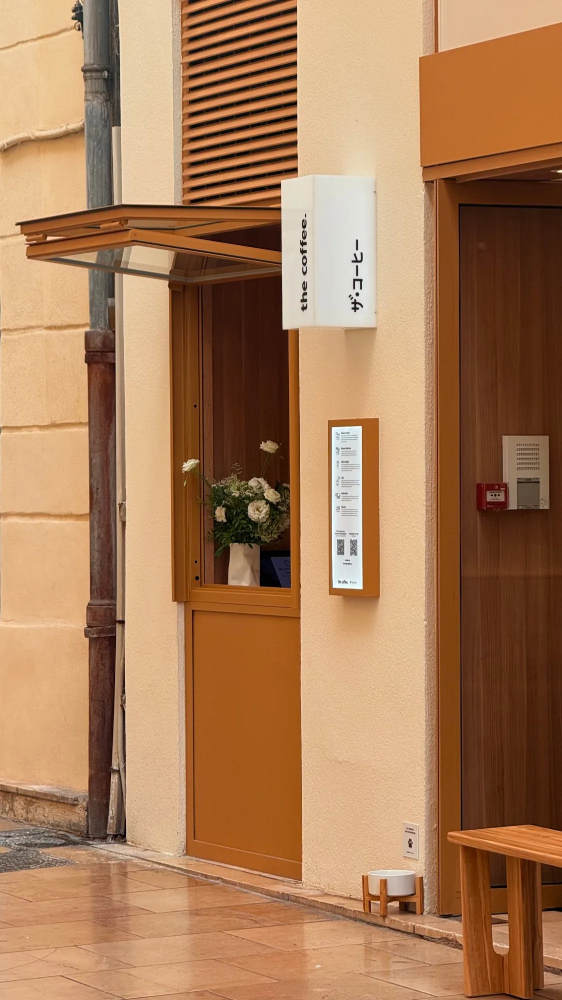
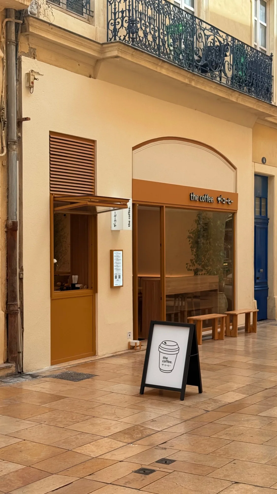
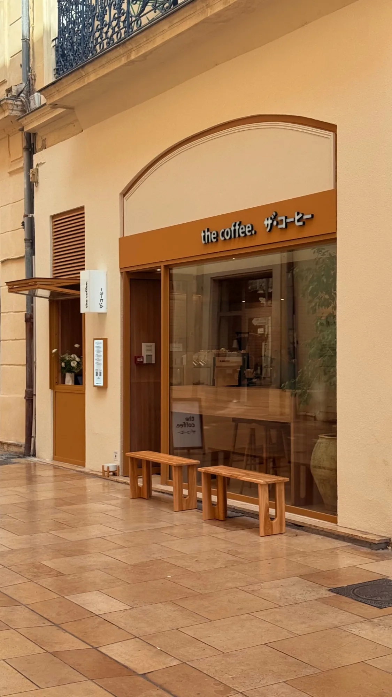

Nîmes compte une nouvelle adresse café. L'enseigne THE COFFEE, reconnaissable à son identité épurée d'inspiration japonaise, s'installe rue du Grand Couvent, une rue piétonne très fréquentée du centre historique. Pour son comptoir de vente à emporter, l'enseigne voulait un kiosque ouvert directement sur la rue, fidèle à son image et parfaitement intégré à la façade. FMG Metal Studio a relevé ce défi avec une menuiserie métallique entièrement sur mesure.
L'enjeu : concilier l'identité de l'enseigne et l'usage quotidien
Une menuiserie de kiosque n'est pas une simple fenêtre. Elle doit répondre à la fois aux exigences visuelles de la marque et aux contraintes très concrètes d'un service au comptoir, plusieurs heures par jour, face à un flux continu de passants. Le cahier des charges combinait plusieurs contraintes :
- L'image de marque : des lignes sobres, des profils fins et une teinte parfaitement accordée à la devanture, à l'enseigne et aux boiseries intérieures.
- Le service sur rue : une grande ouverture dégagée, à bonne hauteur de comptoir, pour servir les clients sans obstacle.
- La circulation piétonne : dans une rue étroite et animée, aucun vantail ne devait empiéter sur le passage.
- L'intégration dans un bâti ancien : une baie existante, dans une façade d'immeuble du centre historique, à laquelle la menuiserie devait s'adapter au millimètre.
Une ouverture horizontale relevable vers le haut
Notre réponse : un ouvrant vitré qui bascule à l'horizontale vers le haut. Une fois relevé, il libère toute la largeur de la baie pour le service et forme un auvent au-dessus du comptoir, qui protège clients et personnel. Surtout, il reste au-dessus de la tête des passants : la rue piétonne demeure entièrement libre, là où un vantail ouvrant à la française aurait gêné la circulation.
Ce principe demande une conception précise : l'ouvrant vitré doit être maintenu de façon stable en position ouverte par ses bras latéraux, se manœuvrer facilement au quotidien et, une fois refermé, assurer la fermeture de la boutique. Sous la partie vitrée, une allège pleine en tôle vient compléter l'ensemble et dessine le comptoir côté rue.


Une finition thermolaquée RAL 1011
La couleur était une exigence centrale de l'enseigne. La menuiserie a été thermolaquée en RAL 1011, un brun beige chaud qui répond à la devanture, aux habillages et au mobilier en bois de la boutique. Au-delà de l'esthétique, le thermolaquage offre une finition homogène et résistante, adaptée à une menuiserie exposée aux intempéries et manipulée tous les jours.
- Ouvrage
- Menuiserie kiosque sur mesure
- Ouverture
- Horizontale, relevable vers le haut
- Finition
- Thermolaquage RAL 1011
- Client
- THE COFFEE
- Lieu
- Rue du Grand Couvent, Nîmes (30)
Une nouvelle adresse à découvrir au cœur de Nîmes
Ce projet illustre notre savoir-faire auprès des commerces, cafés, restaurants et enseignes qui font vivre les centres-villes : façades commerciales, vitrines, kiosques et menuiseries métalliques conçues sur mesure, dans le respect de l'identité de chaque marque et des contraintes du bâti existant. Nous sommes fiers de voir THE COFFEE animer le cœur de Nîmes. Passez découvrir cette nouvelle adresse nîmoise, rue du Grand Couvent, et son kiosque.
Vous préparez l'ouverture d'un commerce ou la rénovation d'une façade ? Découvrez nos réalisations ou parlons de votre projet.
